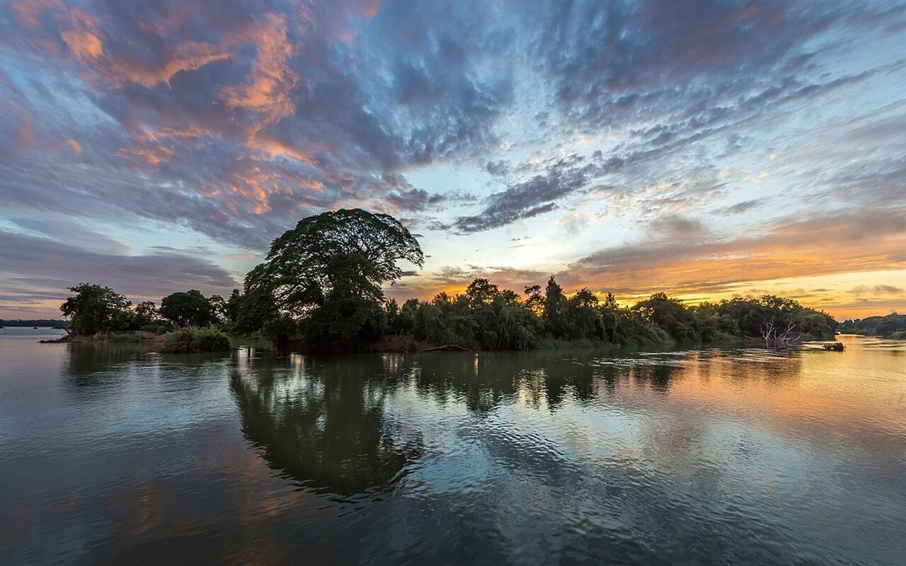
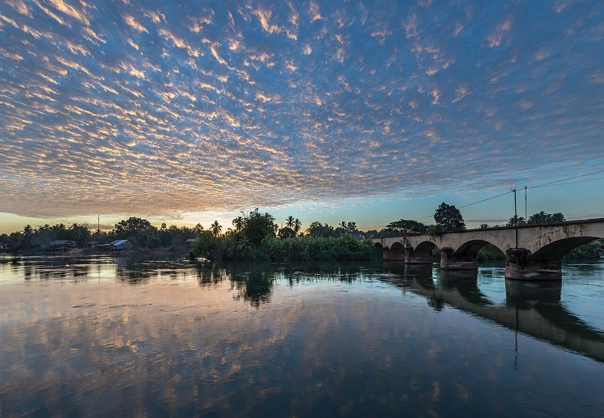
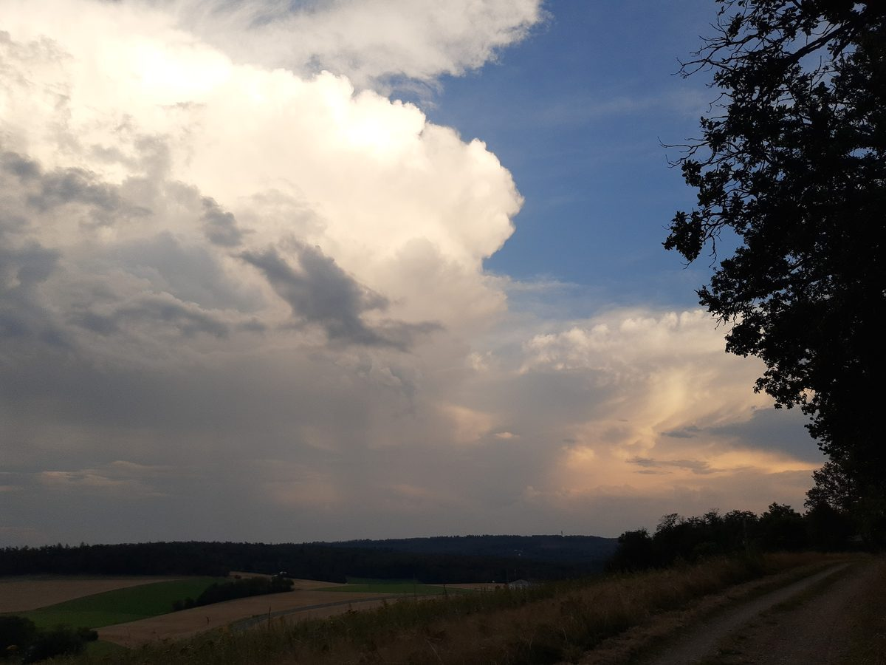
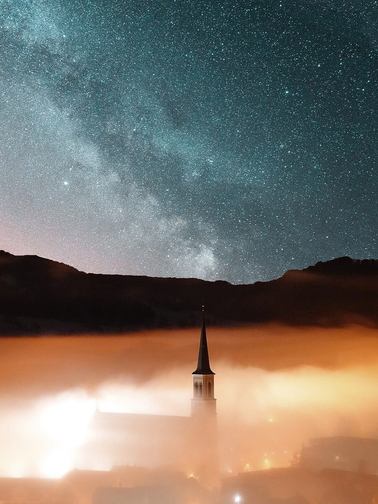

カフェ / 大阪府吹田市津雲台
24kahvila kiitos
大阪府吹田市津雲台にあるカフェ「kahvila kiitos」のご案内ページです。営業時間やメニューなど、詳しいことは準備中。まずはInstagramをのぞいてみてください。

制作側の連想
「kahvila kiitos」と、日が沈まない日
店名の由来は分かりません。制作側は、アルファベットの綴りから北欧のことばのような響きを連想しました。そこから、夏の北の国では夜になっても空が明るいままの「白夜」があると聞いたことを思い出し、このページは「日が沈まない日」を二十四時間ぶんの札にして並べる作りにしました。お店の理念・由来とは無関係の、制作側の連想です。
写真はお店や吹田市のものではなく、時間帯のイメージで選んだ国外・撮影地不明のフリー素材です。
時刻札
朝焼けから星空まで、六枚の札。
- 05時

国外のイメージ(ラオス) あさやけ
- 12時

撮影地不明のイメージ ひる
- 15時

国外のイメージ(ドイツ) ひるすぎ
- 18時

国外のイメージ(インドネシア) ゆうやけ
- 22時

国外のイメージ(スイス) よる
- 02時

国外のイメージ(スウェーデン) しんや
ご案内
お店のこと(確認できたものだけ)
| 所在地 | 〒565-0862 大阪府吹田市津雲台6丁目17 |
|---|---|
| 電話 | 06-7503-4507 |
| 営業時間 | 準備中 |
| 定休日 | 準備中 |
| ご予約 | 準備中 |
| 駐車場 | 準備中 |
| SNS | Instagram @kiitos_since2021 |